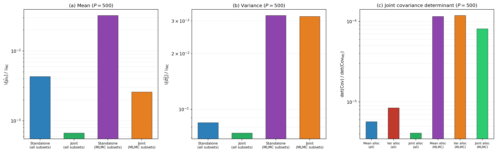
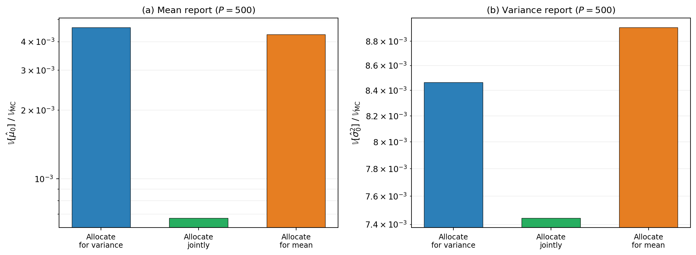

Group ACV: Statistics Beyond the Mean
PyApprox Tutorial Library
Variance and joint mean-variance estimation under the group ACV framework. The same group structure, the same optimal-weight formula, applied to higher-order statistics — with joint estimation providing the multi-output style gain across statistics.
TipDownload Notebook
Learning Objectives
After completing this tutorial, you will be able to:
- Apply the group ACV framework to estimate variances and joint mean+variance vectors, using the same groups and the same optimal-weight result as for mean estimation
- Identify the additional pilot quantities (the \(W\) and \(B\) matrices) needed to compute the per-group covariance for higher-order statistics
- Explain why joint mean+variance estimation reduces both the mean and the variance estimators’ variance compared to estimating each separately — the “estimate together to do better” pattern from MOACV, applied to statistics
- Identify which PyApprox estimator class supports which statistic and recognize why
MLBLUEEstimatoris restricted to mean estimation
Prerequisites
Complete Group ACV Concept for the framework. Multi-Output ACV Concept is helpful: this tutorial applies the same “estimating together helps each” pattern across statistics instead of across QoIs.
What Changes — and What Doesn’t
Mean estimation under group ACV combines per-group sample means \(\hat{\mu}_\ell^k = (1/m^k) \sum_i f_\ell(\boldsymbol{\theta}_k^{(i)})\) with weights chosen by the framework. The unbiasedness constraint and the optimal-weight formula \[ \boldsymbol{\beta}^{\star} = C^{-1} R^{\!\top} (R\, C^{-1} R^{\!\top})^{-1} \mathbf{e}^0 \tag{1}\] hold for any unbiased per-group estimator, not just sample means. To estimate a different statistic, we change two things:
- The per-group estimator — sample mean becomes sample variance or (sample mean, sample variance) jointly.
- The per-group covariance block \(C^k\) — for sample means it is \((1/m^k) \boldsymbol{\Sigma}^k\); for sample variances and mean+variance it involves higher-order moments.
The group structure \(\{\mathcal{G}^k\}\), the restriction matrix \(R\), and the optimal-weight formula are unchanged. The framework supports the new statistic through one mechanical replacement.
Variance Estimation Under Group ACV
The standard unbiased sample variance estimator for model \(\ell\) in group \(k\) is \[ \hat{\sigma}_\ell^{2,k} = \frac{1}{m^k - 1}\sum_{i=1}^{m^k} \left(f_\ell(\boldsymbol{\theta}_k^{(i)}) - \hat{\mu}_\ell^k\right)^2, \tag{2}\]
centered on the sample mean \(\hat{\mu}_\ell^k\) of the same group’s samples. This is unbiased for the population variance \(\sigma_\ell^2\).
NoteSample-mean centering — Choice A
PyApprox uses sample-mean-centered variance estimators (Equation 2) rather than centering on a known population mean even when one is available. This is the standard choice and is what CVEstimator, MultiOutputVariance.sample_estimate, and the group ACV variance pathway all use. A variant centering on a known population mean \(\mu_\ell\) (when known) would yield approximately a factor \((m^k-1)/m^k\) additional variance reduction, but is not implemented.
Per-group estimator vector \(\hat{\mathbf{V}}^k\) now contains sample variances for the models in \(\mathcal{S}^k\): \[ \hat{\mathbf{V}}^k = \left(\hat{\sigma}_\ell^{2,k}\right)_{\ell \in \mathcal{S}^k} \in \mathbb{R}^{|\mathcal{S}^k|}. \] The group ACV estimator becomes \[ \hat{V}_{\text{GACV}} = \sum_{k=1}^K (\boldsymbol{\beta}^k)^{\!\top} \hat{\mathbf{V}}^k, \] and the unbiasedness constraint \(R\,\boldsymbol{\beta} = \mathbf{e}^0\) enforces \(\mathbb{E}[\hat{V}_{\text{GACV}}] = \sigma_0^2\). The optimal-weight formula Equation 1 applies as written.
The per-group covariance \(C^k\) for variance estimation
The per-group covariance block changes character. For mean estimation, \(\mathrm{Cov}(\hat{\mu}_\ell^k, \hat{\mu}_{\ell'}^k) = (1/m^k)\,\Sigma_{\ell \ell'}\) follows from the central limit theorem applied to iid samples. For variance estimation, the analogous covariance involves higher-order moments: \[ \mathrm{Cov}\!\left(\hat{\sigma}_\ell^{2,k}, \hat{\sigma}_{\ell'}^{2,k}\right) = \frac{1}{m^k}\,W_{\ell \ell'} + O\!\left(\frac{1}{(m^k)^2}\right), \tag{3}\] where \(W_{\ell \ell'} = \mathbb{E}\!\left[(f_\ell - \mu_\ell)^2 (f_{\ell'} - \mu_{\ell'})^2\right] - \Sigma_{\ell \ell} \Sigma_{\ell' \ell'} - 2\,\Sigma_{\ell \ell'}^2\) is a fourth-order joint moment — the covariance of squared centered values between models \(\ell\) and \(\ell'\).
The matrix \(W \in \mathbb{R}^{(M+1) \times (M+1)}\) is the variance-estimation analogue of \(\boldsymbol{\Sigma}\). It is a property of the joint distribution of the model outputs and must be supplied via a pilot study (see Pilot Studies Concept).
Mean + Variance Joint Estimation
The most interesting extension is jointly estimating the mean and the variance of \(f_0\). The per-group estimator vector becomes a concatenation: \[ \hat{\mathbf{Z}}^k = \begin{bmatrix} \hat{\mathbf{Q}}^k \\ \hat{\mathbf{V}}^k \end{bmatrix} \in \mathbb{R}^{2|\mathcal{S}^k|}, \] stacking \(|\mathcal{S}^k|\) sample means and \(|\mathcal{S}^k|\) sample variances. The weight vector \(\boldsymbol{\beta}^k\) doubles in length accordingly. The unbiasedness unbiasedness constraint extends to enforce unbiasedness for both \(\mu_0\) and \(\sigma_0^2\): \[ R\, \boldsymbol{\beta} = \begin{bmatrix} \mathbf{e}^0_\mu \\ \mathbf{e}^0_\sigma \end{bmatrix}, \] where \(\mathbf{e}^0_\mu\) has a 1 in the position of \(\mu_0\) and zeros elsewhere, and \(\mathbf{e}^0_\sigma\) has a 1 in the position of \(\sigma_0^2\) and zeros elsewhere.
The per-group covariance \(C^k\) for mean+variance
The per-group covariance acquires a block structure: \[ C^k = \frac{1}{m^k}\begin{bmatrix} \boldsymbol{\Sigma}^k & (B^k)^{\!\top} \\ B^k & W^k \end{bmatrix}, \] where \(B^k_{\ell \ell'} = \mathbb{E}\!\left[(f_\ell - \mu_\ell)(f_{\ell'} - \mu_{\ell'})^2\right]\) is the mean–variance cross-moment between models \(\ell\) and \(\ell'\). The matrix \(B\) is a third-order joint moment, also estimated from the pilot.
Why joint estimation helps
Suppose you want only \(\sigma_0^2\). Why include the mean estimators in the same optimization?
Because the cross-statistic covariance \(B\) couples the two estimators. The variance estimator \(\hat{V}_{\text{GACV}}\) can absorb signal from the mean estimators of all groups whenever \(B \neq 0\) — the optimal weights Equation 1 couple the two blocks. This is the same mechanism as the multi-output ACV gain (Multi-Output ACV Concept), applied to statistics rather than QoIs.
Concretely: when LF model variance estimates have non-zero cross-covariance with HF model mean estimates (as is typical for real model ensembles), the joint estimator’s variance for \(\sigma_0^2\) is strictly less than the standalone variance-only estimator’s variance. The mean estimator’s variance is also improved or unchanged — never worse.
The gain is zero only in the degenerate case \(B \equiv 0\) (the joint distribution of model outputs is such that mean and variance estimators are uncorrelated across models). For physically meaningful ensembles this essentially never holds; there is always a strict gain.
What This Looks Like Numerically
Figure 1 compares standalone estimation against joint mean+variance estimation on the polynomial five-model benchmark at budget \(P = 500\), using both all \(2^M - 1\) subsets and the smaller MLMC-style consecutive-pair subsets (with BLUE-optimal weights, not fixed \(-1\)). The pilot quantities \(\boldsymbol{\Sigma}\), \(W\), and \(B\) are computed via exact Gauss quadrature on the known polynomial model functions, eliminating pilot sampling noise from the comparison.
Three patterns to notice:
Joint estimation helps both statistics. In panels (a) and (b), the joint estimator achieves lower variance for both the mean and the variance component compared to standalone estimation with the same subsets.
The gain comes from the cross-statistic covariance \(B\). When LF model variance estimates have non-zero cross-covariance with HF model mean estimates, the joint estimator can absorb signal that standalone estimation discards. This is the multi-output gain pattern from Multi-Output ACV Concept, applied across statistics rather than across QoIs.
The determinant reveals the joint objective. Panel (c) evaluates \(\det(\mathrm{Cov})\) of the joint estimator covariance at each allocation separately. Standalone mean and standalone variance use different allocations, so we show what happens when the joint covariance is evaluated at the mean-only allocation, the variance-only allocation, and the joint allocation. The joint allocation achieves the lowest determinant because it directly minimizes this quantity, exploiting the \(B\)-matrix coupling.
Allocation Target vs Report Target
The previous figure compared standalone estimation (allocating and reporting a single statistic) against joint estimation (allocating for mean+variance simultaneously and reporting a component). A sharper question: what happens if you allocate for one statistic and report another? This is a problem-formulation question rather than an optimizer-tactics one (see the callout in Group ACV Optimization for the distinction).
NoteMean-guided screening for variance and joint allocations
Mean estimation has a dead threshold of zero — the optimizer can push partition sample counts below 2. But variance estimation is undefined for \(m^k < 2\) (the \(m^k - 1\) denominator in Equation 2). The variance and joint allocations in the figure below use MeanGuidedSubsetFitter to handle this: a cheap mean solve identifies the active partitions, then the target statistic is optimized on the reduced set.

Two patterns to notice:
Panel (a), mean report. The joint estimator dominates — the \(B\)-matrix coupling gives the joint weight formula access to signal that the standalone mean estimator cannot extract from the same sample structure.
Panel (b), variance report. The allocation choice matters more here than for mean reporting. Allocating for variance is clearly better than allocating for mean, and the joint allocation is best overall — it exploits the cross-statistic coupling to improve variance estimation beyond what the standalone variance allocation achieves.
The joint allocation is the right default when you want both statistics: it achieves the best or near-best performance for both mean and variance reporting, exploiting the cross-statistic coupling through the \(B\) matrix.
For problems where some low-fidelity model means are known analytically, the allocation-target-mismatch penalty shifts — see Group ACV Mixed Concept for how known statistics change the trade-off for variance and joint estimation.
Which Estimator Class Supports What
PyApprox’s estimator classes have different capabilities along the statistic axis. A practical summary:
| Estimator class | Mean | Variance | Mean+Variance |
|---|---|---|---|
MCEstimator |
✓ | ✓ | ✓ |
MLMCEstimator |
✓ | ✓ | ✓ |
MFMCEstimator |
✓ | ✓ | ✓ |
GMFEstimator (ACVMF / PACV) |
✓ | ✓ | ✓ |
MLBLUEEstimator |
✓ | ✗ | ✗ |
GroupACVEstimatorIS |
✓ | ✓ | ✓ |
GroupACVEstimatorNested |
✓ | ✓ | ✓ |
ImportantWhy
MLBLUEEstimator is mean-only
The MLBLUE sample-allocation problem is a semidefinite program (SDP) that depends on the per-group covariance \(C^k\) being linear in \(1/m^k\). For sample-mean estimators this is exact: \(C^k = (1/m^k)\,\boldsymbol{\Sigma}^k\). For sample variance and mean+variance estimators, \(C^k\) has \(1/m^k\) leading terms plus \(O(1/m^{k\,2})\) corrections, and the SDP linearization is no longer exact. PyApprox enforces this restriction with a guard in MLBLUEEstimator.__init__ that rejects MultiOutputVariance and MultiOutputMeanAndVariance statistics and directs the user to GroupACVEstimatorIS or GroupACVEstimatorNested, which use a gradient-based optimizer that handles the higher-order covariance structure correctly.
For variance and mean+variance estimation, use GroupACVEstimatorIS (independent samples across groups — most flexible) or GroupACVEstimatorNested (nested samples — recovers MFMC-style allocation in the mean special case).
Practical Considerations
Larger pilot studies are needed. Mean estimation under group ACV needs the \((M+1) \times (M+1)\) covariance \(\boldsymbol{\Sigma}\) from the pilot. Variance estimation additionally needs \(W\) (fourth-order moments) — a much noisier object to estimate from a fixed pilot. Mean+variance needs both \(W\) and \(B\). The Pilot Studies Concept rule of thumb \(N_p \approx 2\)–\(5\,(M+1)\) is the minimum for mean estimation only; variance and mean+variance estimation typically need \(N_p \approx 5\)–\(10\,(M+1)\) for stable \(W\) and \(B\) estimates.
Backend compatibility. The optimization pathway for variance and mean+variance uses gradient-based methods (ScipyTrustConstrOptimizer or equivalent). Both NumPy and PyTorch backends are supported. Gradients are computed by autograd in the PyTorch backend and by finite differences (or analytic formulas where available) in the NumPy backend.
Group structure choices. All group structures discussed in Group ACV Concept — MLMC pairwise, MFMC nested, ACVMF star, MLBLUE arbitrary — remain available for variance and mean+variance, except that MLBLUEEstimator itself is mean-only. To get an MLBLUE-style arbitrary- subsets group structure for variance, use GroupACVEstimatorIS with model_subsets=get_model_subsets(nmodels, bkd) (all \(2^L-1\) non-empty subsets).
Key Takeaways
- Group ACV estimates variance and mean+variance using the same group structure, same unbiasedness constraint, and same optimal-weight formula as for mean estimation
- The per-group covariance \(C^k\) generalizes: for variance it involves the fourth-order moment matrix \(W\); for mean+variance it gains a third-order cross-moment block \(B\)
- Joint mean+variance estimation strictly improves the variance estimator over estimating variance alone, mirroring the multi-output ACV gain pattern (see Figure 1)
MLBLUEEstimatoris mean-only by design — its SDP allocator requires the linear-in-\((1/m)\) structure that only holds for sample means; for variance and mean+variance useGroupACVEstimatorISorGroupACVEstimatorNested- Pilot study costs are higher for variance and mean+variance because \(W\) and \(B\) are higher-order moments that need more samples to estimate reliably
Exercises
Suppose \(f_0\) and \(f_1\) are perfectly correlated mean-wise but uncorrelated variance-wise: \(\rho^{\text{mean}}_{0,1} = 1\) but \(W_{0,1} = 0\). What does the optimal group ACV variance estimator look like for \(\sigma_0^2\)? Does \(f_1\) help estimate \(\sigma_0^2\)?
For joint mean+variance estimation, what happens to the framework when \(B \equiv 0\) (mean and variance estimators uncorrelated across all models)? Does the joint estimator’s variance for \(\sigma_0^2\) equal the standalone variance-only estimator’s variance? Explain.
Under what condition is the variance reduction for variance estimation approximately equal to the variance reduction for mean estimation (on the same problem, with the same group structure)? (Hint: think about when \(W\) has similar rank-1 structure to \(\boldsymbol{\Sigma}\).)
The pilot study costs more samples for variance estimation. Suppose for a four-model ensemble a pilot of \(N_p = 50\) gives a usable \(\hat{\boldsymbol{\Sigma}}\) but a marginal \(\hat{W}\). What practical strategies could you use to make the variance estimator reliable without doubling the pilot budget?
Justify in one sentence why
MLBLUEEstimatorrejectsMultiOutputVariancestatistics. (Hint: think about whether the per-group covariance \(C^k\) is linear in \(1/m^k\).)
Next Steps
- Group ACV Mixed Concept — Mixed known statistics: when some moments are known analytically and others are estimated
- Pilot Studies Concept — How to size a pilot study for the higher-order moments \(W\) and \(B\)
- Multi-Output ACV Concept — The complementary axis of generalization: multiple QoIs of the same statistic
- API Cookbook — Runnable code for
GroupACVEstimatorISwithMultiOutputVarianceandMultiOutputMeanAndVariancestatistics
Tip
Ready to try this? See API Cookbook → Multi-Statistic Estimation for runnable examples using MultiOutputVariance and MultiOutputMeanAndVariance.
References
[GJE2024] A. Gorodetsky, J. Jakeman, M. Eldred. Grouped approximate control variate estimators. arXiv:2402.14736, 2024. DOI
[DWBG2024] D. Schaden, E. Ullmann, R. Butler, J. Jakeman. Multi-output approximate control variates. 2024. arXiv:2310.00125